| Bottom | homepage |
|
Billiard Balls | Why Indeed |
|
|
Molecular Dissociation: from Dust to Dirt
(Dirt, trucked in, and trucked out)
By
Judy Wood
This page last updated, June 14, 2007
This page is currently UNDER CONSTRUCTION
and is currently being updated.
[Note: References and Sources will be posted and figure numbers will be corrected (in sequential order) when this paper is finished .]
(originally posted: May 16, 2007)
|
Shortcuts
|
Audio Files
|
|
| XI. Dirt · Bucket Brigade · Dirt Walkway · More Dirt · Rudi Giuliani's "120 dump trucks" · Trucking dirt in · Trucking dirt out · Rainbow · Still Fuming |
|
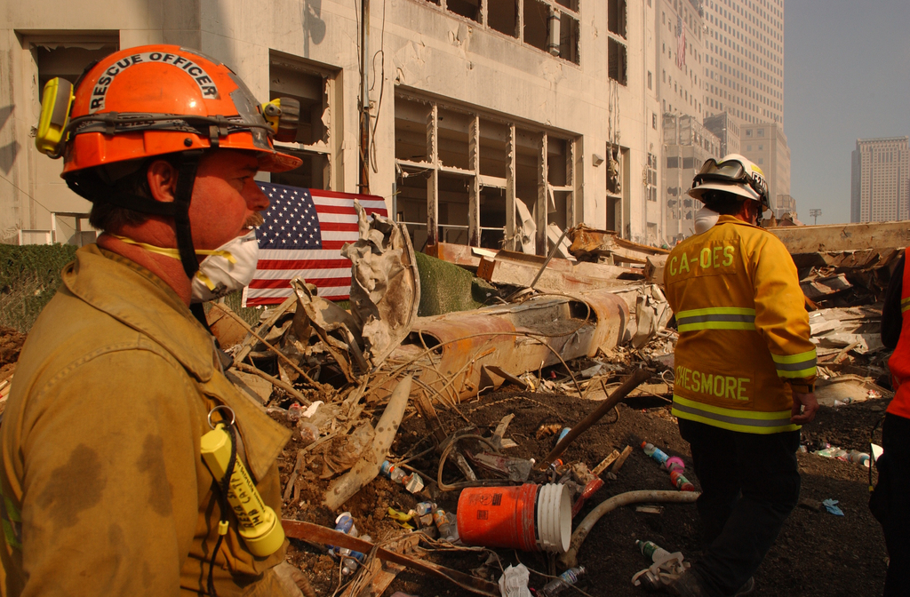 |
| Figure 81. Check out this new load of dirt! It looks like potting soil. What possible explanations you can think of? Landscaping? They appear to have dumped fresh dirt on top of the fuming dust in the "front yard" of WFC2. (A week later, they appear to scoop it up and haul it back out, as shown below for WFC1.) (9/16/01 entered) Source |
| Figure 82. It looks silly to have this dirt dumped on the fire truck and in the fire truck. Why were the remains of this fire truck sprinkled with what looks like moist potting soil? Clearly it didn't suffer from an out-of-control fire in these places. The paint above the tire does not look heat affected. (9/16/01 entered) Source |
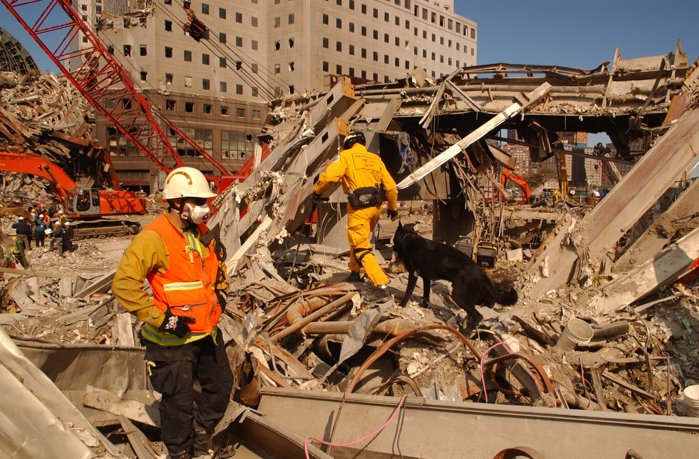 |
| Figure 83. Why is dirt sprinkled on top of the beams? Those pipes on the ground have a lot of rust! They are located near center of photo, between the two guys in the foreground. If they were looking for human remains, why would they dump dirt on it? (9/16/01 entered) Source |
Bucket Brigade Top
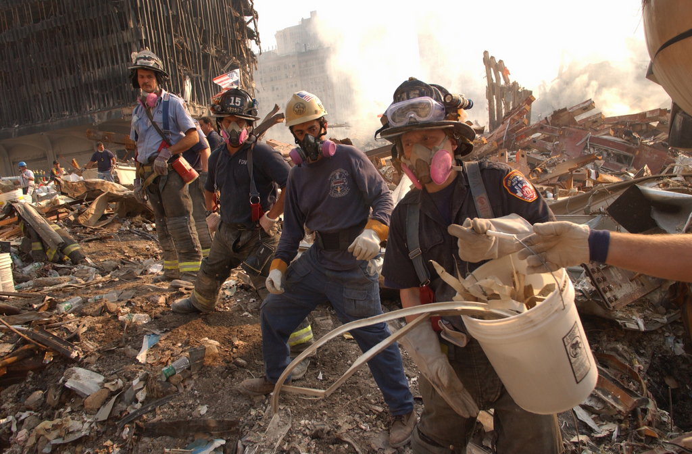 |
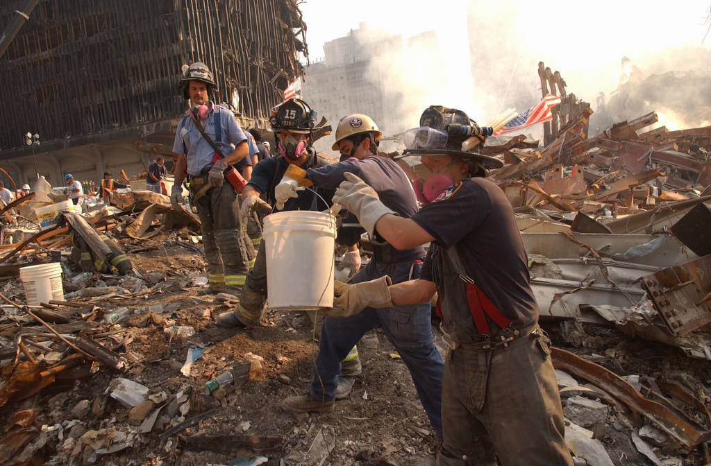 |
| Figure 84. Why the bucket brigade? (9/16/01 entered) Source |
Figure 85. Who put all that dirt under where these guys are standing? (9/16/01 entered) Source |
That looks like fresh potting soil under their feet.
Why the bucket handoff? What is so special about the contents of that bucket that deserve a personal escort up the bucket-brigade line? It looks like a few pieces of weather stripping and a few pieces of shredded aluminum.
 |
| Figure 86. This "dust" looks like fine talc. (I'm referring to the stuff stuck on the bike, like the read-out panel on the closest bike.) (9/16/01 entered) Source |
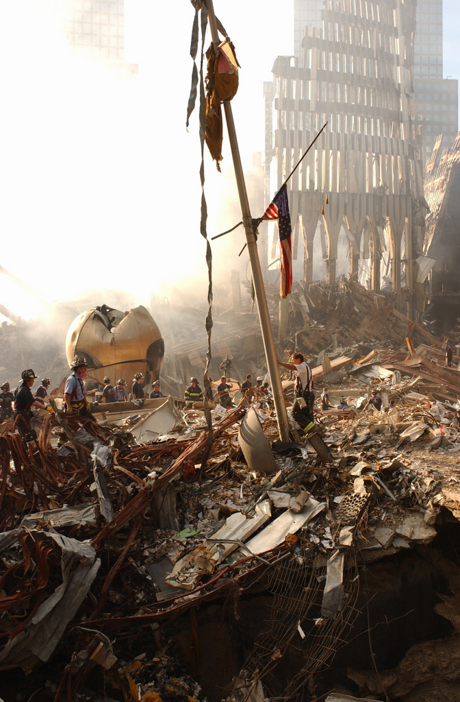 |
|
| Figure 87. Why would there be dirt sprinkled on top of the rubble pile? The dirt arrived quickly. (9/13/01 entered) Source |
Figure 88. Why would there be dirt on top of the plaza? above the basement? (9/16/01 entered) Source |
In fighting fires, they may drop loads of dirt on the fire from a chopper. In any case, this will be their cover story. But... we never saw any flames to put out. So, they still have some explaining to do.
| Figure 89. Why would there be dirt sprinkled on top of the rubble pile? The dirt arrived quickly. Is this from a landfill? (9/13/01 entered) Source |
I note there are few pictures from 9/14/01. Perhaps all the pics had dirt trucks in them. ;-)
Some may be "dust," but I don't see how you can have "dust" sitting on top of a pile after you've hosed it down.
Does fire cause instant dust? I don't think so.
In fighting fires, they may drop loads of dirt on the fire from a chopper. In any case, this will be their cover story. But... we never saw any flames to put out. So, they still have some explaining to do.
Who threw the big rocks through the window? Actually, we can prove this one is staged! Note the big piece of glass to make it look like the window was busted by the rocks? Rocks tumble. Where are the rocks supposed to be from? The WTC didn't have a "Hokie stone" facade. (I think you know what that is, now.) So, where did such thick rocks come from?
I note there are few pictures from 9/14/01. Perhaps all the pics had dirt trucks in them. ;-)
Some may be "dust," but I don't see how you can have "dust" sitting on top of a pile after you've hosed it down.
Does fire cause instant rust? I don't think so.
Dirt Walkway Top
There are few FEMA pictures from 9/14/01. Perhaps all the pics had dirt trucks in them. ;-)
| Figure 97. This was the pedestrian walkway over West Street, between WFC3 and WTC6. Why would it have a huge amount of dirt in it? (9/14/01 entered) Source |
Figure 98. If this amount of dirt had been contained in planting pots, there wouldn't have been room for pedestrians. (9/14/01 entered) Source |
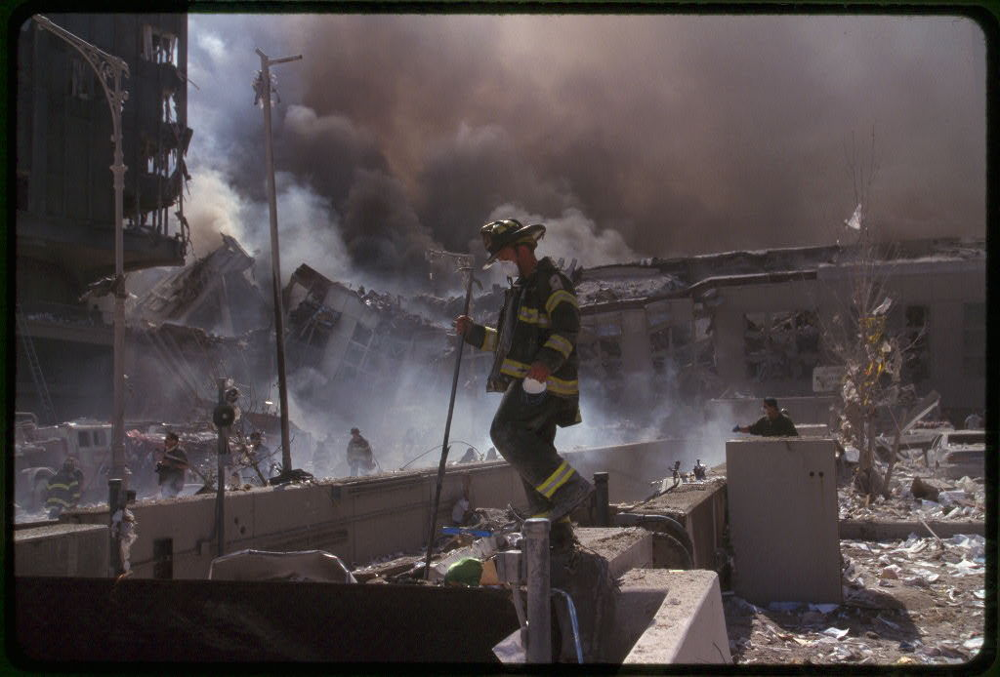 |
|
| Figure 97(a). This is a similar view of the pedestrian walkway a few days earlier. It is amazing how fast they took this down. (9/11/01) Source |
 |
||
| Figure 99. Another, 9/16/01 (9/16/01 entered) Source |
Figure 100(a). Why, more than two weeks later is the dirt pile in front of (the former) WTC3 bigger?
(10/05/01) Source: |
Figure 100(b). Enloargement of the previous figure which has been lightened.
(10/05/01) Source: |
| Figure 101. Is this guy guarding the dirt pile? Perhaps the addition of dirt helped the pile appear to grow larger after 9/11. (9/15/01 entered) Source |
Some of it may be "dust," but I don't see how you can have "dust" sitting on top of a pile after you've hosed it down. Does fire cause instant rust? I don't think so. I note there are few pictures from 9/14/01. Perhaps all the pics had dirt trucks in them. Does fire cause instant rust? I don't think so.
More Dirt Top
| Figure 90. The dirt arrived early (and often)! (This photo has been lightened with increased contrast to see what's on the ground. Click here for original brightness.) (9/13/01 entered) Source |
| Figure 91. Sprinkled with fresh dirt. (9/15/01 entered) Source |
Figure 92. (9/20/01 entered) Source |
| Figure 93. Clean wrinkled beams. (9/13/01 entered) Source: |
Figure 94. My favorite wrinkled beams now have dirt dumped on them! How dare they! (9/15/01 entered) Source |
| Figure 95. Why is there dirt evenly spread over the walking area? This was the WTC plaza level that was covered with cement blocks. Where did all this dirt come from? (9/13/01 entered) Source |
Figure 96. Freshly dumped dirt! (9/13/01 entered) Source |
Where did all this dirt come from?
Rudi Giuliani's "120 dump trucks" Top
| Figure 96b. On 9/12/01, WCBS radio recorded Rudi Giuliani 's following statement: (Click here to listen, or the longer version, where Giuliani speaks at time mark 1:20.) "We were able to move 120 dump trucks out of the city last night. (So) it should give you a sense of the work that was done over night. And so, some of the debris has already been removed. More of it is being removed, and it will be done by barge all throughout the day today." i.e. Expect to see dirt trucks coming in to NYC throughout the day(?). Statement (9/12/01) Source |
Trucking Dirt Top
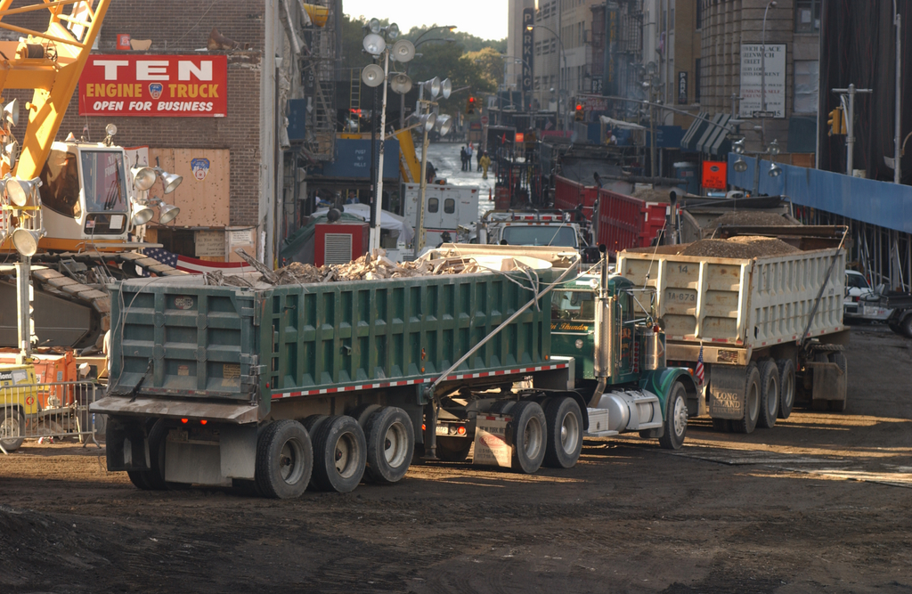 |
|
|
Figure 102. The four yellow dump trucks are heading south on West Street, toward the WTC complex. Each of the dump trucks carries a uniform load of what appears to be dirt.
(9/27/01) Source: |
Figure 103(a). This appears to be dirt being trucked away from the WTC complex. Why is so much dirt coming and going? The four trucks ahead of the green one carry a uniform load of what appears to be dirt. |
|
Figure 102(a). The four yellow dump trucks are heading south on West Street, toward the WTC complex. Each of the dump trucks carries a uniform load of what appears to be dirt.
(9/27/01) Source: |
|
Figure 103(b). The large truck headed south appears to be hauling dirt. This intersection is a block east of Church and Vesey, and the top of the photo is west. Broadway is the street from right to left. So, the big truck, which appears to be loaded down with landfill dirt, has driven south on Broadway, past the Vesey Street intersection. It didn't come to where it is from Vesey Street; there are no tracks on Vesey Street!
(9/23/01) Source: (thought to be from NOAA) |
Trucking Dirt In/Out Top
|
Figure 104. WFC1, immediately after the event.
(Some folks apparently had a parking problem.) (9/12?/01) Source: |
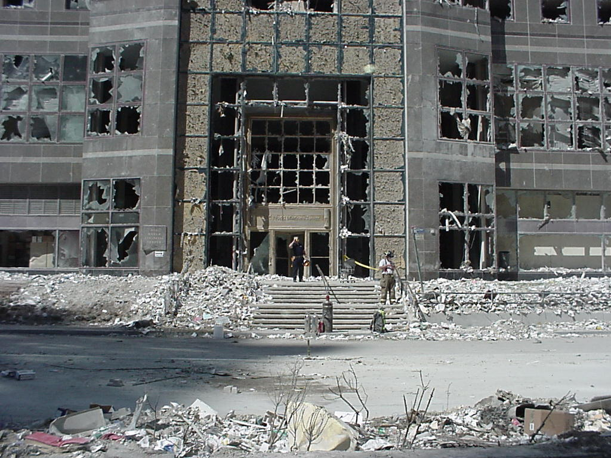 |
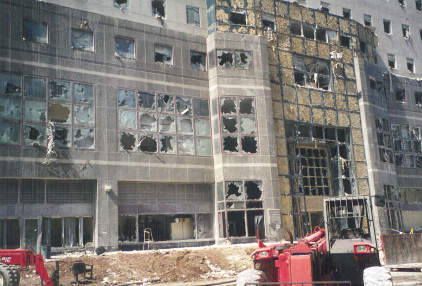 |
|
Figure 104(b). Then, a few days later, the front yard of WFC1 appears to have fresh dirt on in. The windows have round holes in them. They are double-paned windows, but the two windows do not show the same damage. In some cases, the inner window is intact while the majority of the outer window is missing. The marble-facade around the doorway is completely missing. The remaining building facade does not appear damaged.
(9/13?/01) Source: |
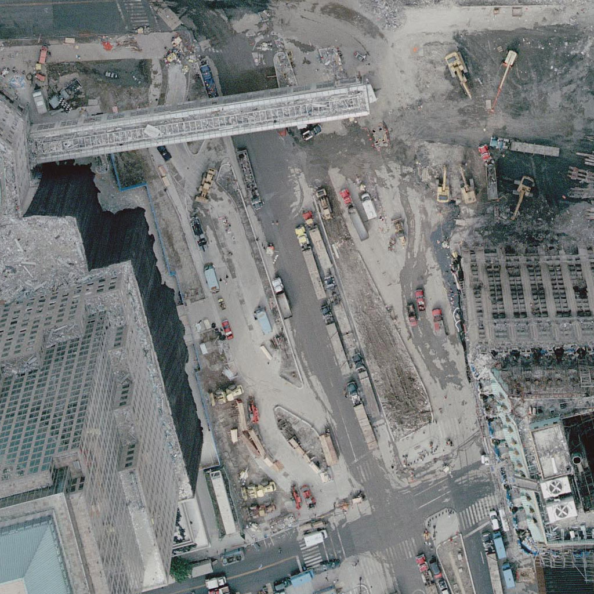 |
|
Figure 104(c). Then, yellow bulldozers appear to be scooping up and removing all of the dirt from in front of WFC1.
(9/23/01) Source: |
Rainbow Top
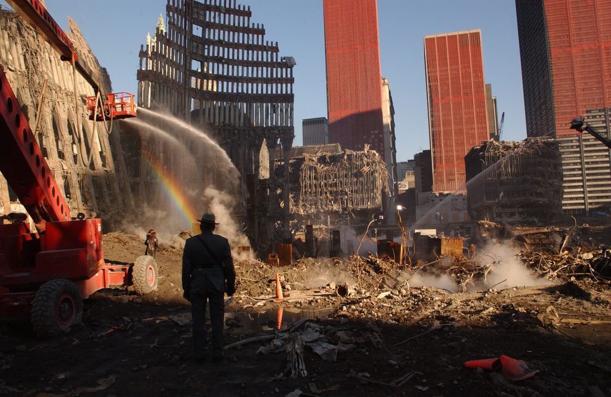 |
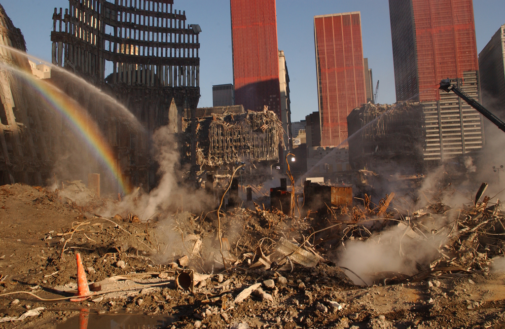 |
|
Figure 105. Looking east, through the core of WTC1, there is still fuming from the wet dirt. Note the puddle in the foreground! What molten metal???! There are pools of water under a beautiful rainbow! Those orange-rusted core columns are very bright. |
Figure 106. Looking east, through the core of WTC1, there is still fuming from the wet dirt. Note the puddle in the foreground! What molten metal???! There are pools of water under a beautiful rainbow! Those orange-rusted core columns are very bright. |
 |
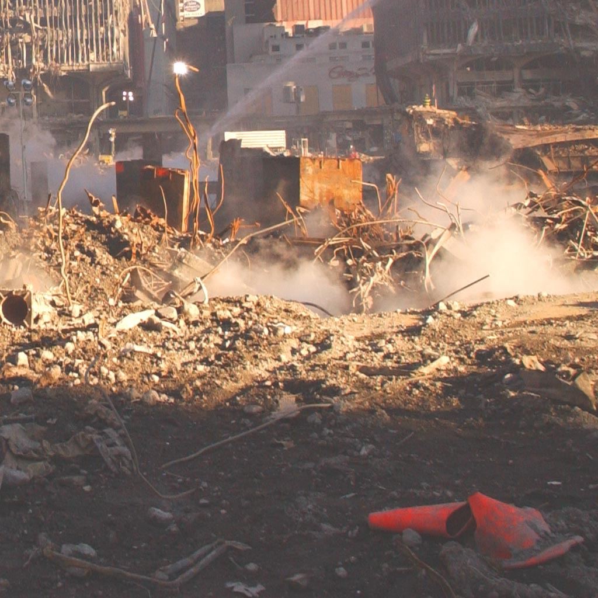 |
|
Figure 105(a). An enlargement from the left side of the Figure above, lightened. |
Figure 105(b). An enlargement from the right side of the Figure above, lightened. |
 |
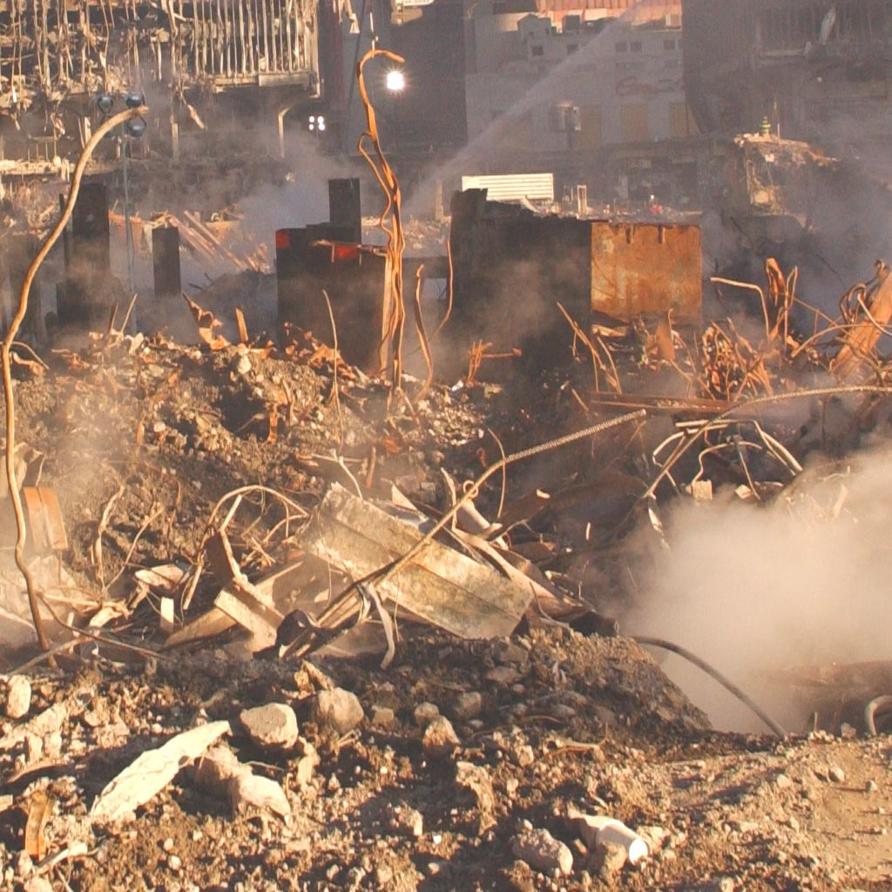 |
|
Figure 106(a). An enlargement from the left side of the second Figure above, lightened. |
Figure 106(b). An enlargement from the right side of the second Figure above, lightened. |
Still Fuming Top
 |
|
Figure 106. Why are they still hosing down the "pile" in March 2002? There appears to be dust still rising from the pile. Why? And why is there so much dirt, still? |
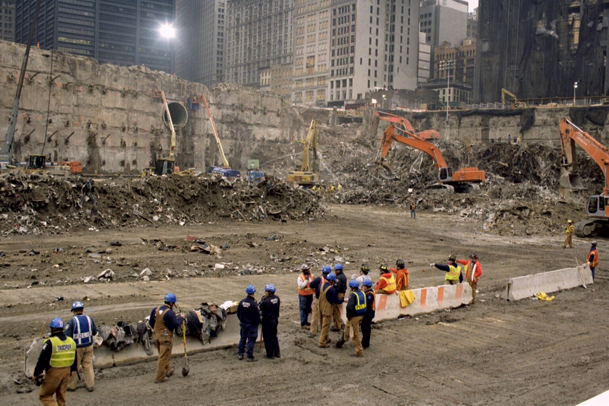 |
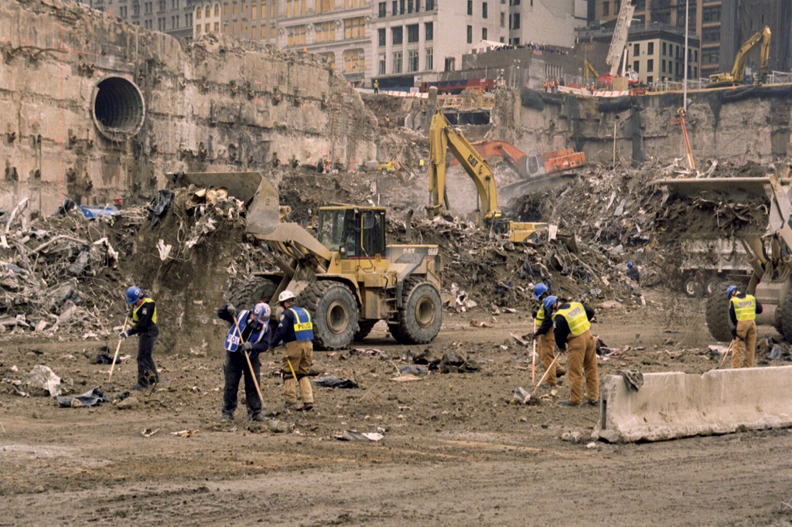 |
|
Figure 107. The southeast corner of big bathtub is in the background. Why are they hosing down the dirt pile? A reader suggests that policemen are waiting to do forensic investigation. (photo filed 3/15/02) Source |
Figure 108. The southeast corner of the big bathtub again. Nanodust rises from the dirt pile. The workers are wearing respirators, not simple dust masks, six months after 9/11. The dust or nanohaze is very fine and does not settle out like regular dust would behind a vehicle on a dirt road. The policemen apparently are sifting through debris, looking for body parts |
|
Continue to next page.
|
Continue to next page.
| Top | homepage |
|
Billiard Balls | Why Indeed |
|
|
|